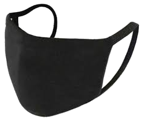
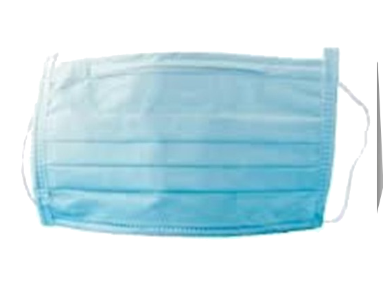
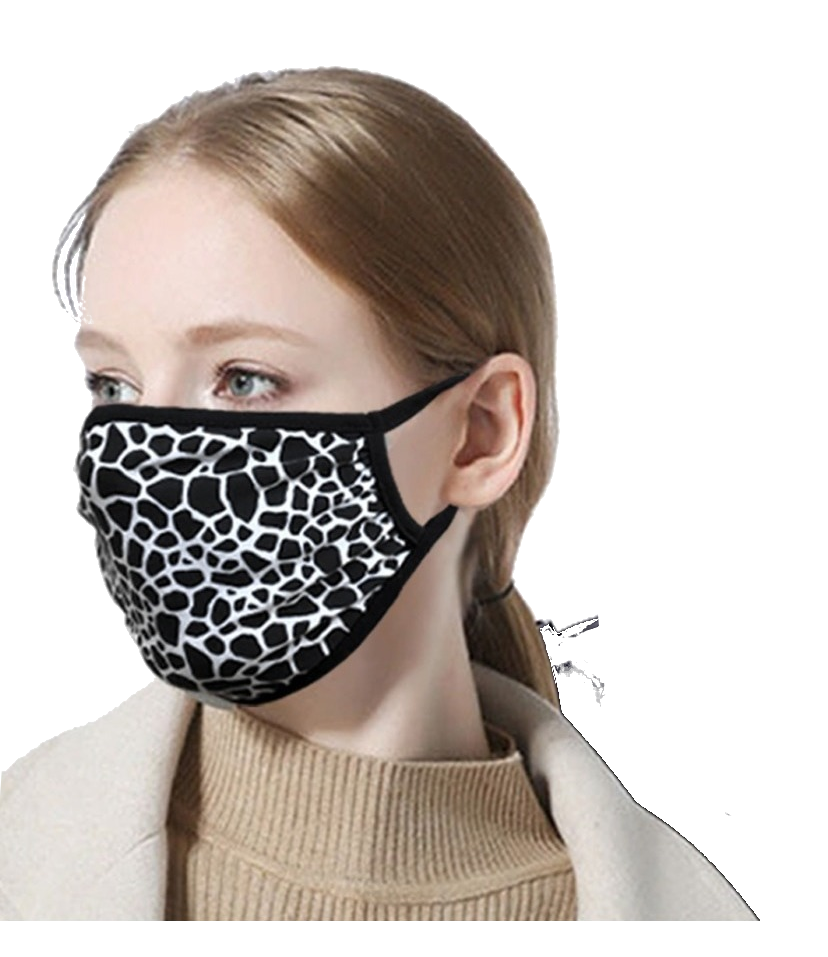

BARBIJOS
Tenemos 3 tipos de barbijos a diferentes precios pero todos de buena calidad:

Tapa Cubre Boca - Doble Tela
$170
Modelo: TAPA BOCA Reutilizable
Material: Algodon Jersey

Tapa bocas Exting Norte
$99
Modelo: Lavable
Talle: Único

Barbijo/tapaboca Gabardina
$200
Modelo: Doble Tela con Bolsillo + 2 Filtros
Material: Tela Elastica
Volver a Productos